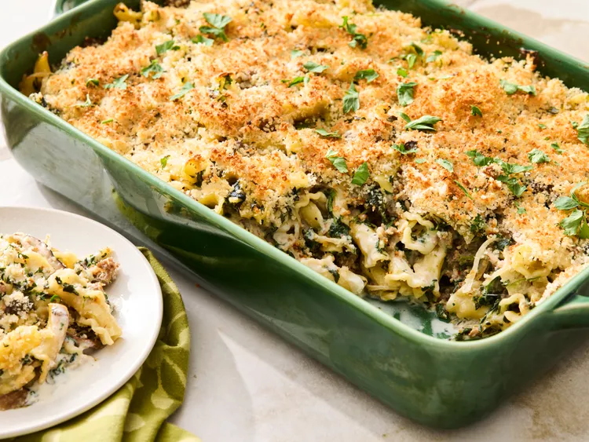

Stuff Mushroom Pasta Bake

Description
This delicious stuffed mushroom pasta bake has all the flavors of
stuffed mushrooms yet in a creamy sauce baked in the oven with lots of veggies.
Ingredients
- 12 ounces dried campanelle or bowtie pasta
- 1 pound bulk Italian sausage
- 1 pound mixed fresh mushrooms (button, cremini, shiitake, and/or oyster), sliced
- 1 large onion, thinly sliced
- 3 cloves garlic, minced
- 1 tablespoon reduced-sodium soy sauce
- 5 tablespoons butter, divided
- 1/4 cup all-purpose flour
- 1 teaspoon chopped fresh thyme (or 1/2 teaspoon dried thyme)
- 1/2 teaspoon salt
- 1/2 teaspoon freshly ground black pepper
- 1 cup reduced-sodium chicken broth
- 2 cups half-and-half
- 1 tablespoon Dijon mustard
- 1 cup shredded Italian blend cheese
- 1 (10 shounce) package frozen chopped spinach, thawed and squeezed dry
- 1 cup panko bread crumbs
- 2 tablespoons fresh parsley, divided
Steps
- Gather all ingredients.
- Preheat the oven to 375 degrees F (190 degrees C). Grease a 9x13-inch baking dish.
- Cook pasta in a large pot of boiling salted water 2 minutes less than the suggested time on the package directions. Drain, reserving 1 cup pasta cooking water. Return pasta to pot and keep warm.
- Meanwhile, cook sausage in a 12-inch skillet over medium heat until browned, about 8 minutes. Transfer to paper towels to drain using a slotted spoon.
- Add mushrooms, onion, and garlic to the skillet. Cook until liquid is released and has evaporated, and vegetables are tender, about 8 minutes.
- Pour in soy sauce to the skillet. Cook and stir until soy sauce is absorbed by mushrooms, about 1 minute.
- Transfer mushroom mixture to pot with the pasta.
- Add 4 tablespoons butter to the skillet. When melted, whisk in flour, thyme, salt, and pepper. Cook and stir for 1 minute.
- Add broth, half-and-half, and Dijon mustard to the skillet. Cook and stir until thickened and bubbly. Whisk in cheese and spinach until cheese is melted.
- Add sauce and sausage to the pot with the pasta mixture, stir to combine. Thin sauce to desired consistency with reserved pasta water. Transfer to the prepared baking dish.
- Melt remaining 1 tablespoon butter. Stir in panko and 1 tablespoon parsley. Sprinkle panko mixture over the pasta mixture.
- Bake in the preheated oven until browned and bubbly, about 30 minutes.
- Garnish with remaining 1 tablespoon parsley.
Back to homepage